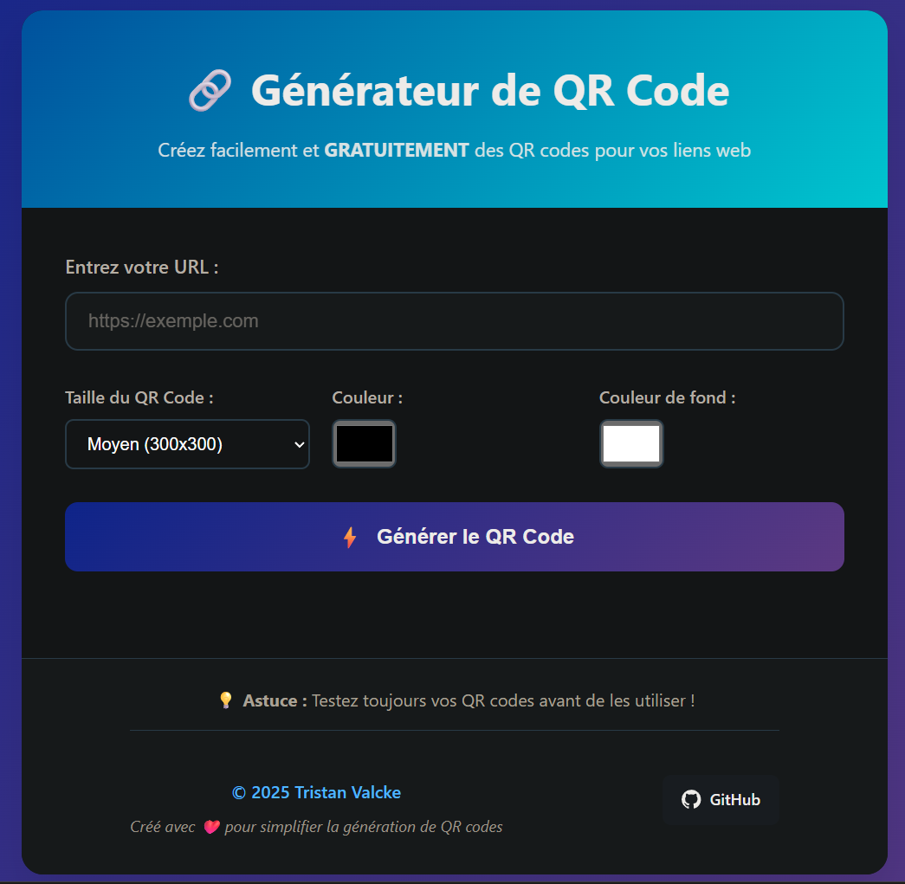

Générateur de QR Code en ligne
Un outil gratuit, rapide et sans limite de temps pour générer vos QR codes personnalisés.

Fonctionnalités principales
- Génération instantanée de QR code à partir de n'importe quel ou lien
- Personnalisation de la taille et de la couleur du QR code
- Téléchargement du QR code en format PNG
- Service 100% gratuit, aucune inscription requise
Fonctionnalités à venir
- Mode sombre (dark mode)
- Export en plusieurs formats (SVG, PDF, etc.)
- Option d'impression directe du QR code
Comment ça marche ?
Le générateur utilise un système de fallback pour garantir la fiabilité :
async function generateQRWithFallback(text, size) { ... }
Trois méthodes sont testées successivement :
- QRServer API
- Google Charts API
- Générateur local JS
Si la première méthode échoue, la suivante est automatiquement tentée, assurant ainsi la génération du QR code même en cas de problème réseau ou API.